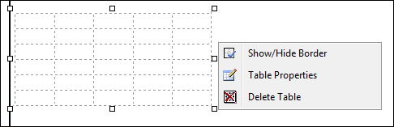

Showing/Hiding Table Border
How to hide or show the table borders using the Table Wizard of the TelerikEditorProvider for the RTE.
- Place your cursor on the outer edge of the table. The cursor will change to show the table can be selected.
- Right-click and select
 Show/Hide Border from the drop down list to either hide or show the table border.
Show/Hide Border from the drop down list to either hide or show the table border.

Showing/Hiding Table Border